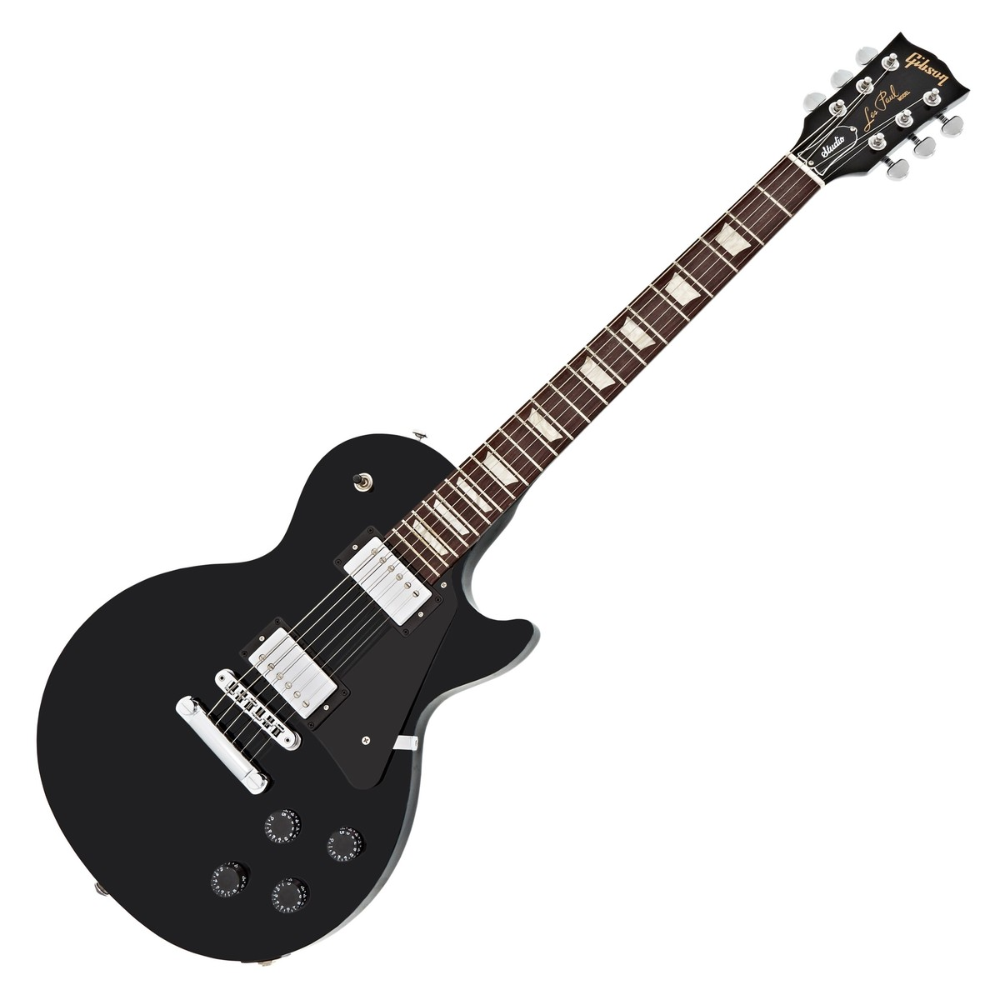
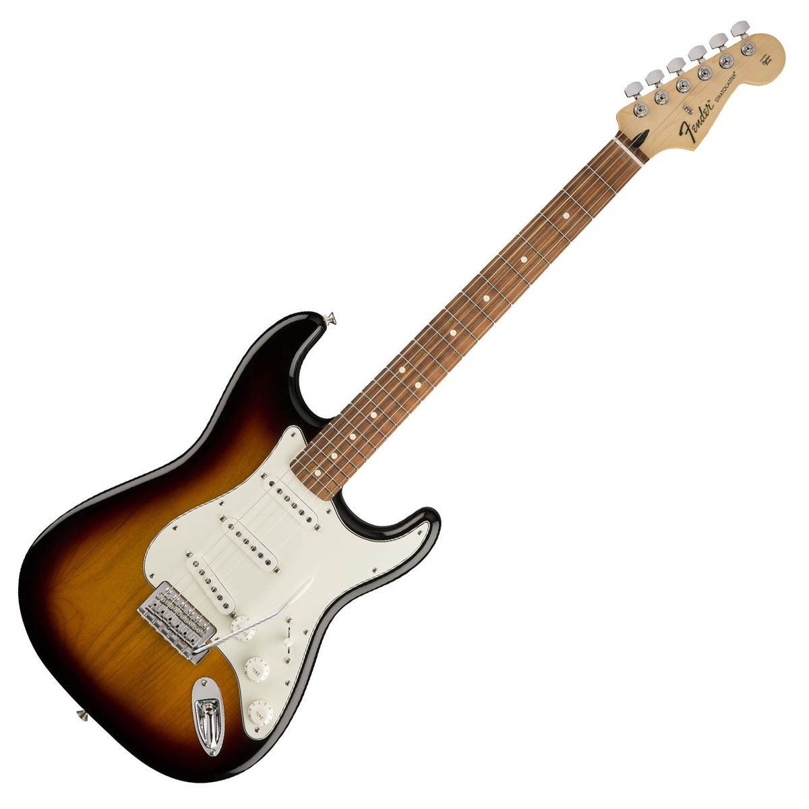
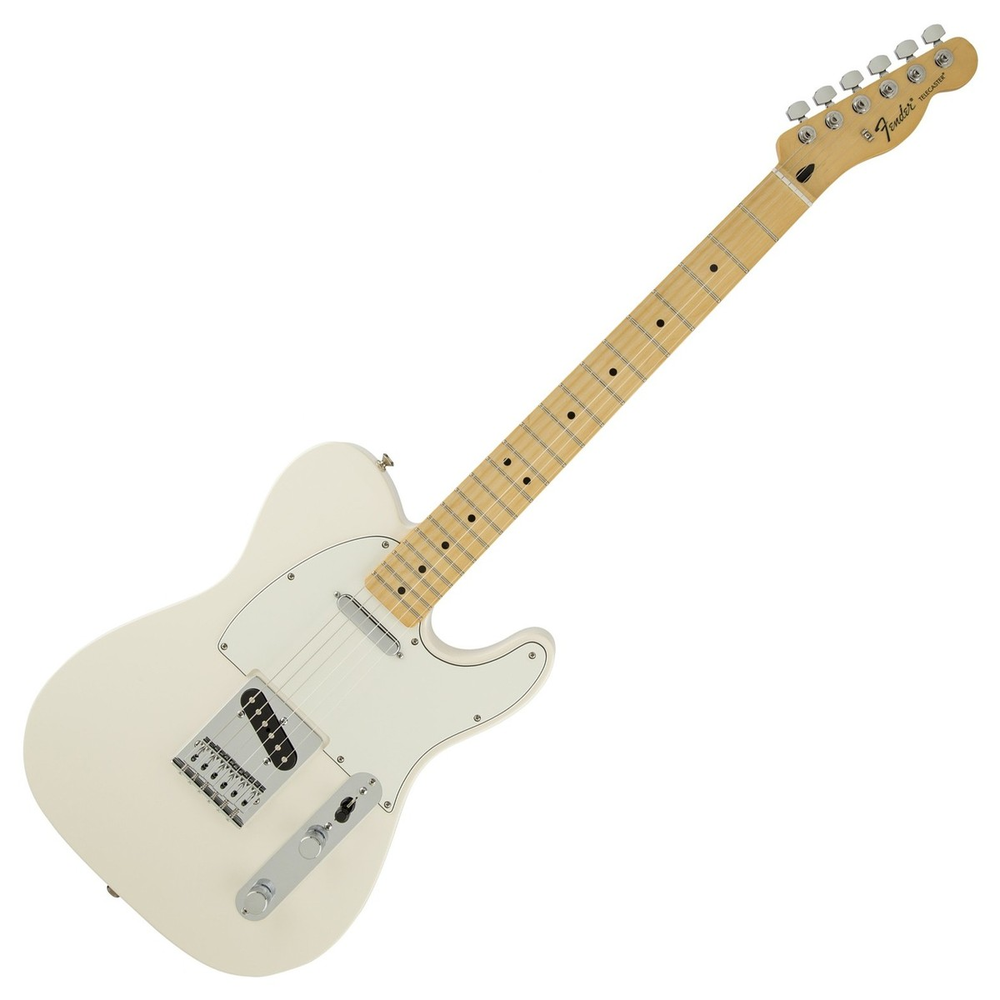

The home of Gibson electric guitars today is "Gibson USA," built in 1974 in Nashville specifically for the production of Gibson's Les Paul guitars. Although the entire guitar industry went through a slump in the late '70s, the spirit of innovation remained strong at Gibson. In response to a growing demand for vintage stylings, Gibson tapped its rich history and reissued the dot-neck version of the ES-335 in 1981 and the flametop sunburst Les Paul in 1982. At the same time, two legendary guitarists joined Gibson- B.B. King in 1980 with the Lucille model and Chet Atkins in 1982 with his new concept of a solidbody acoustic guitar.
Gibson world headquarters moved to Nashville in 1984 with the closing of the Kalamazoo plant. The financially troubled company was rescued in January 1986 by Henry Juszkiewicz and David Berryman, and the new owners quickly restored Gibson's reputation for quality as well as its profitability.
Today's Gibson electric guitars represent the history as well as the future of the electric guitar. The models whose designs have become classics-the ES-175, ES-335, Flying V, Explorer, Firebird, SGs and Les Pauls-are a testament to Gibson's wide appeal, spanning more than four decades of music styles. Gibson's close relationship with musicians is manifest in endorsement models from King, Atkins and jazz greats Howard Roberts and Herb Ellis, plus new Les Pauls made to the personal specifications of rock stars Jimmy Page and Joe Perry. In 1994, Gibson's Centennial year, the new Nighthawk model won an industry award for design, setting the stage for a second hundred years of Gibson quality and innovation.

The Stratocaster first appeared in 1954, incorporating many design innovations based on feedback from professional musicians, Fender staff and Leo Fender himself. Its third single-coil pickup offered more tonal possibilities, its sleekly contoured body made it more comfortable, and its double cutaway design made access to upper registers much easier. Most important, however, was the addition of the new Fender vibrato (or “tremolo”) bridge, an innovation originally intended to let guitarists bend strings, thus achieving the pedal steel-like sound so popular among country music artists of the day. Nobody could have foreseen then how the Stratocaster would go on to revolutionize popular music. Essentially unchanged since its 1954 debut, it is the most popular and influential electric guitar ever, and players at all levels and in all genres continue to rely on its sound, playability and versatility to this day. Leo Fender himself remained an immensely creative force over the next decade, introducing many classic instrument and amplifier designs, including the Jazz Bass® guitar, the Jaguar® and Jazzmaster® guitars and the Twin Reverb® amplifier. Because of poor health, Leo Fender sold the company to CBS in 1965. Fender Musical Instruments experienced tremendous growth over the next 20 years, but a lack of commitment and real understanding of music and musicians by CBS gradually became apparent.

As innovative as it was, little if anything was fancy about the Telecaster. Several of its features were carried over from the Hawaiian steel guitars Fender had already been making since 1945, such as the “ashtray” bridge cover, knurled chrome knobs, Kluson tuners and combination of bridge and bridge pickup in one integral unit. If the maple neck broke or became too worn, there was no complex luthiery involved—you just screwed on a new one. It had a simple black pickguard (of fiber or Bakelite) held on with five screws. Unlike many existing guitars at the time, the Telecaster’s strings were pulled straight over the nut, with all the tuners on one side of the headstock—ideas that Leo himself said he borrowed from 19-century Istrian folk guitars and Viennese Staufer guitars.
The controls were another matter. True, the layout was simple—two knobs and a three-position switch, but their combined function was not as simple as might be supposed at first. The front knob always controlled master volume, but the rear knob was not always a master tone knob. In 1951, putting the selector switch in the rear (bridge) position delivered both pickups, with the rear knob serving as a blend control that governed the amount of neck pickup sound mixed into the bridge pickup sound. The selector switch in the middle position delivered the neck pickup only with its “natural” mellow tone (its chrome cover soaked up extra capacitance), and the switch in the front (neck) position delivered the neck pickup only with extra capacitance that produced a bassier tone; the rear knob affected neither of these settings.